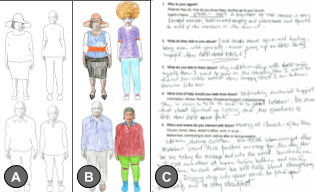

Elizabeth Stowell
Smart and Connected Churches
-
<--Back to Projects
-
Fall 2018, I began the formative work of a community-based participatory research project. .
Project Overview: The goal of the project was to create an mHealth app the improve the health of the church communities.
 -
Background:
-
Formative Work (2019-2020): We adapted a number of design methodologies to...
Modular Storyboards: Pros and Cons of the method
-
References: